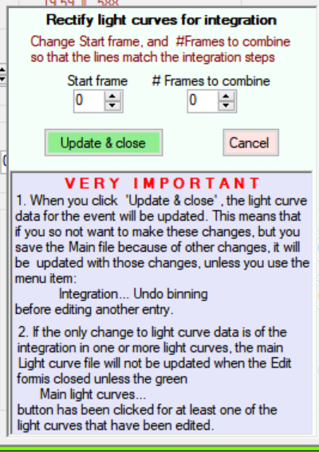
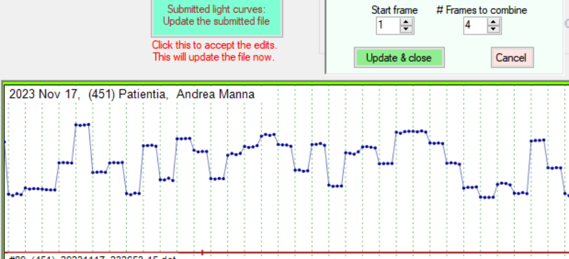

The edit functionality applies to either the main file of light curves, or the set of submitted light curves. These options are invoked when the editor is selected under the Admin functions menu.
The box at bottom left
At the top left there are three checks that can be done.
Each check should be processed separately. Any light curves that have problems will be listed. Double-click on any listed, and the data will be displayed. Or you can display any light curve by its number (given at the bottom left of a light curve plot - the number following a #. This can be obtained by plotting individual light curves, or a group of light curves using Plot all listed light curves.
The editor will accept changes to any of the fields provided - which cover all the data elements of the event. The one thing you cannot do is to change the light curve data type. That is, you cannot convert between a lunar, and asteroidal, light curve.
The numbers given in brown under the fields are the date elements in the file before any editing. They are not strictly aligned with the data entry fields.
With the check for general errors - when you select a light curve from the list, you will get a message box that indicates the general area of the data where the error exists.
Three buttons are provided to automatically complete some fields. Update XZ updates the XZ field on the basis of the SAO number. Update SAO updates the SAO field on the basis of the XZ number. And Get name updates the asteroid name on the basis of its number.
The Get name function assumes the asteroid is in the file of asteroid elements you currently use for asteroid searches.
For planet, and planetary satellites, you cannot enter the objects identifier in the Number field. But you can specify the name in the Name field
If the occulted star is a 'G' star, you cannot enter a star number.
After you have edited the data for a light curve, it is processed slightly differently:
For light curves in the Main file of light curves.
For edits that do not involve the integration edit: Click the button Main Light Curves. Accept the revised data. This will make changes to the data as held in memory. These changes will be given effect when you click E X I T on the menu bar - where you will be asked if you want to save the changed data. Then, and only then, is the data in the main file of light curves updated.
For edits that involve the integration edit: Important. When the integration details are changed in the process of using the integration tool, the light curve data in the Main file is changed. If you click Update & Close, the updated light curve data in the Main file will remain - unless you subsequently click the menu option Integration... Undo binning. [Note: the ability to Undo Binning is lost if you move to another event to edit.] If you haven't undone the binning, those changes will have been included in the data held in memory, even if you haven't clicked the button Main Light Curves. Accept the revised data. Consequently, if you make changes to other light curves which you want to save, the light curve for this event will also be saved.
For submitted light curves.
Click the button Submitted light curves. Update the submitted file. When this is selected, the file will be updated. The unedited file will have its extension changed to .init, and the edited file will be written as the light curve file. If the check box for excluding the light curve is checked, the light curve file will have its extension changed to .del [There are no spec ial issues associated with the Integration function.]
This menu item copies the graphic light curve plot - for its full extent (not just that displayed) for pasting in other software.
The menu item Integration has two sub-menu items: Bin integration blocks, and Undo binning. Only one of these is enabled at any time.
The Undo Binning option is used to undo the binning. It can only been invoked on a light curve being currently edited. If you move to another light curve, and come back to the initial light curve, the ability to undo the binning of that light curve is lost.
When you select Bin integration blocks the following will appear on the form.

If the Editor is being used with a Submitted light curve, the box headed
VERY IMPORTANT will not be displayed.
To correct a light curve that has not binned the individual frames for an integration interval, you use the two up/down controls to set the first frame of the first block, and the number of frames to include in that block.
When the number of frames is 1 or greater, a series of green vertical lines are drawn. These lines need to be aligned with the first frame within an integration block, like this:

When you have them aligned, click Update & Close, and the light curve will be re-drawn with the data binned in accordance with your settings. Additionally, the time of the first frame, the number of points in the light curve, and the duration, will be adjusted to match.
There may be occasions where it is useful to have the light curve displayed in AOTA. Some examples are:
This is achieved by simply clicking the menu item Display Event in AOTA button at the top right of the form. Thereafter use AOTA in the usual manner.
A .csv file of the light curve (in Tangra format) is written to the Generated Files folder, with the name csv_from_LightCurve.csv. Note that this file is overwritten each time a light curve is displayed in AOTA. If you want to have that .csv file for future use, you need to rename it. The file includes basic details of the light curve event.